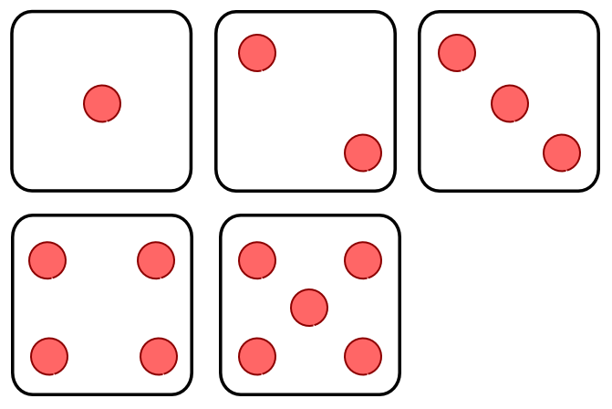

AEVO Prüfung praktischer Teil - Präsentation
AEVO Prüfung Teil II - Präsentation
„Sichere Passwörter - einfach zu merken“
Marko Pohl
Seit 20 Jahren als Softwareentwickler tätig
Seit 6 Jahren bei der Polyas GmbH
Polyas ermöglicht verbindliche und sichere Online Wahlen, Nominierungen und Abstimmungen im Internet
Kunden: Kammern, Kirchen, Verbände, Vereine, Parteien ...
Agenda
- Ausgangssituation im Betrieb
- Analyse der Adressaten
- Das Lernziel
- Methode
- Fazit
1. Ausgangssituation im Betrieb
1. Ausgangssituation im Betrieb
Es soll eine Methode zur Erstellung von Passwörtern bzw. Passphrasen gezeigt werden, die sicher und einfach zu merken sind.
Die erstellte Passphrase soll in dem betrieblich vorgeschriebenem Passwort Manager genutzt werden.
Präsentiert wird die „Diceware Methode“ und diese anschließend praktisch eingesetzt.
2. Analyse des Adressaten
2. Analyse des Adressaten
- Alter 24 Jahre
- Allgemeine Hochschulreife, Leistungskurs Mathematik
- Sehr gute Kenntnisse in der Benutzung von Standardanwendungen
- Hohe Lernbereitschaft und hohes fachliches Interesse
- Hohe Fähigkeit selbstständig zu lernen
- Kognitiv-intellektuelle Lerntyp
3. Bestimmung des Lernziels
3. Bestimmung des Lernziels
Richtlernziel
- Umsetzen, Integrieren und Prüfen von Maßnahmen zur IT-Sicherheit und zum Datenschutz (§ 4 Absatz 2 Nummer 6)
Groblernziel
- Betriebliche Vorgaben und rechtliche Regelungen zur IT-Sicherheit und zum Datenschutz einhalten
- Sicherheitsanforderungen von IT-Systemen analysieren und Maßnahmen zur IT-Sicherheit ableiten, abstimmen, umsetzen und evaluieren
Feinlernziel
- Auszubildende sollen ein Passwort mit der „Diceware Methode“ erstellen können und sollen in der Lage sein die Anforderungen an ein sicheres Passwort nachzuvollziehen. Sie sollen verschiedene Passwort Typen unterscheiden und beschreiben können.
4. Methode
Methodenmix aus Präsentation und Lehrgespräch
- Vorbereitung
- Einstieg
- Durchführung
- Lernerfolgssicherung und Kontrolle
- Abschluss
Methode Punkt 1: Vorbereitung
Erstellen der Präsentation „Sichere Passwörter - einfach zu merken“
Zeit / Ort
Ungefähr eine Stunde Dauer,
am besten zwischen 10:00 und 11:30 oder 13:30 und 16:00 Uhr
Besprechungsraum oder möglichst störungsfreier Büro Arbeitsplatz
Benötigte Materialien:
- Entsprechende Präsentationsmöglichkeit
- 5 Spielwürfel
- Eine Wortliste mit 7776 Zeilen
Methode Punkt 2: Einstieg
Methode Punkt 2: Einstieg
- Smalltalk
- Relevanz erklären und dadurch die Motivation steigern
- Vorkenntnisse erfragen, z.B. über Erfahrungen mit Passwörtern
Methode Punkt 3: Durchführung
Methode Punkt 3: Durchführung
- Durchführen der Präsentation „Sichere Passwörter - einfach zu merken“
- Inhaltsbeispiel: Unterscheidung und Gegenüberstellung verschiedener Passwort Typen
Kurzes, komplexes Passwort
DCj9*qn8
| Möglichkeiten | 576 480 100 000 000 |
|---|---|
| Entropie | 49 bits |
Langes, einfaches Passwort
glukose bild puffer sydney hallo
| Möglichkeiten | ~ 1.90e+45 |
|---|---|
| Entropie | ~ 150.41 bit |
Methode Punkt 3: Durchführung
- Durchführen der Präsentation „Sichere Passwörter - einfach zu merken“
- Inhaltsbeispiel: Unterscheidung und Gegenüberstellung verschiedener Passwort Typen
- Erklärung des Fachbegriffes der Entropie
- Erläuterung des Begriffs „Bruteforce Hack“ in Beziehung zu den verschiedenen Passwort Typen
- Darstellung der Vor- und Nachteile verschiedener Passwort Typen sowie ihre Einsatzmöglichkeiten
-
Inhaltsbeispiel: Demonstration der „Diceware Methode“
Eine einfache Methode zur Erstellung sicherer Passwörter
Die Diceware Methode
Erfunden 1995 von Arnold Reinhold
Man braucht eine Wortliste:

eine lange Wortliste ... 7776 Zeilen...
Und Zufall!
Besser gesagt eine Zufallszahl zwischen 11111 und 66666
ohne Nullen
Wie erzeuge ich die?
Ablauf der „Diceware Methode“
5 mal mit 5 Würfeln würfeln und jeweils das entsprechende Wort in der Wortliste nachschauen
[1] [3] [6] [6] [1] = aussicht
[6] [1] [1] [3] [2] = tatsache
[2] [1] [1] [6] [2] = bunt
[3] [1] [5] [3] [2] = geruch
[2] [1] [4] [3] [2] = computer
Mittlerweile werden für eine sehr sichere Passphrase 6 Wörter oder 5
Wörter plus ein frei positioniertes Zeichen empfohlen.
20 Wörter um ein sicheres Passwort für die Post Quantencomputer
Ära zu erstellen.
Methode Punkt 3: Durchführung
- Durchführen der Präsentation „Sichere Passwörter - einfach zu merken“
- Inhaltsbeispiel: Unterscheidung und Gegenüberstellung verschiedener Passwort Typen
- Erklärung des Fachbegriffes der Entropie
- Erläuterung des Begriffs „Bruteforce Hack“ in Beziehung zu den verschiedenen Passwort Typen
- Darstellung der Vor- und Nachteile verschiedener Passwort Typen sowie ihre Einsatzmöglichkeiten
-
Inhaltsbeispiel: Demonstration der „Diceware Methode“
Eine einfache Methode zur Erstellung sicherer Passwörter
Methode Punkt 4: Lernerfolgssicherung und Kontrolle
- Lehrgespräch Thema: Passwort Typen im Unternehmen und Produkt
- Bitten die Unterweisung in das Ausbildungsnachweisheft einzutragen und dieses später kontrollieren
Methode Punkt 5: Abschluss
- Zusammenfassung des Erlernten
- Ausblick auf das nächste Thema der Ausbildung
- Abschließend Zeit für Fragen, Feedback und Kritik
Fazit
- Der komplexe Lerninhalt wird durch den Methodenmix aus Präsentation und Lehrgespräch vermittelt
- Der Azubi wird individuell angesprochen und sein Lerntyp wird berücksichtigt